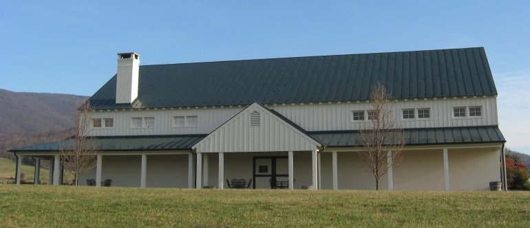

|
North America >
USA >
Virginia >
Albemarle County >
King Family Vineyards
King Family Vineyards
Crozet, VA

www.kingfamilyvineyards.com
The King Family started out growing grapes but eventually moved into vinification as well. They currently have 16 acres growing 5 different grape
varietals. Typically they drop about half the fruit from the vines and were some of the first in the Monticello AVA to emphasize quality over
quantity in grape production.
Vintages:
Chardonnay Monticello
2006
Viognier Monticello
2006
Loreley Late Harvest Viognier Monticello
2006
Cros� Monticello
2006
Cabernet Franc Monticello
2006
Late Harvest Cabernet Franc Monticello
2006
Meritage Monticello
2005
Merlot Monticello
2005
|